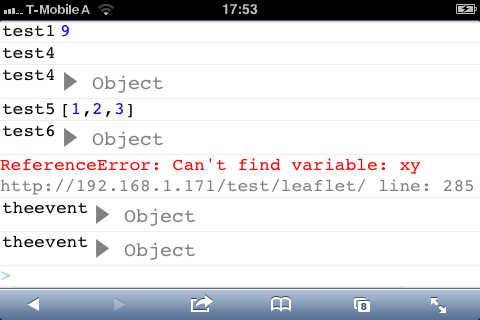

Waterbug Testpage
This is the testpage for the waterbug javascript console.
How to use it?
Insert the javascript line.
<script type="text/javascript" src="waterbug.js"> </script>
Strings:
waterbug.log("teststring");
Variables, array, objects
waterbug.log("teststring",666,{x:6},[1,266,6]document.body);
I can't see it
Turn you mobile phone 90° to the right and you will see the console.
Screenshot

QR Code
Turn your phone to the right!!!
FAQ
No error messages in Android
Froyo does not support "onerror".